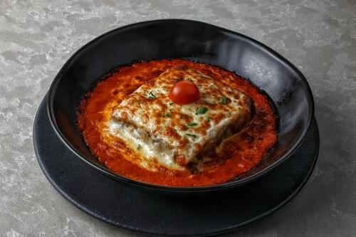

Odin's Lasagna

Photo by Adriano Bragi from Pexels
Lasagnas are special here at Odin: a timeless classic with a modern twist.
Description
One of the most loved dishes Italian cuisine has to offer in a new, delicious version.
Perfect for getting warm and cozy on a cold winter night.
Revisited by Odin Recipes just for you. Enjoy!
Ingredients
- Meat
- Onion and garlic
- Tomatoes
- Salt and sugar
- Spices and seasonings
- Parmesan cheese
- Mozzarella cheese
- Eggs
Steps
- Make the meat sauce
- Cook the noodles
- Make the ricotta mixture
- Layer the lasagna
- Cover with foil and bake
- Let the lasagna rest before serving
Et voila, Odin's Lasagna is served!